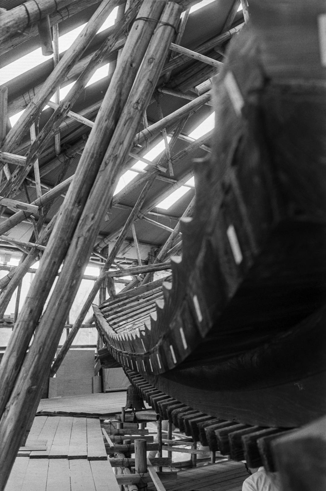
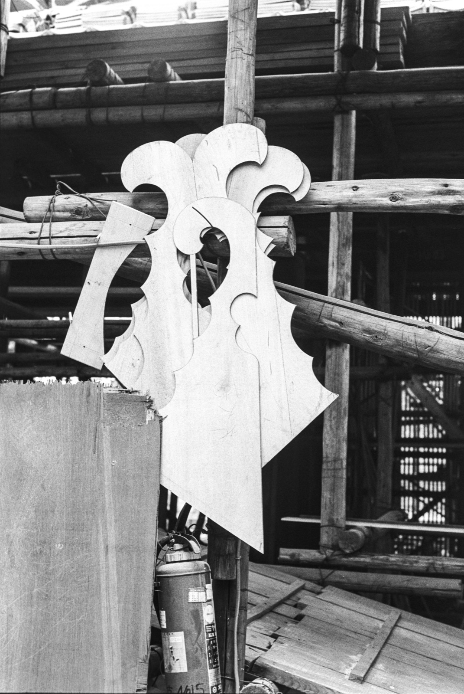
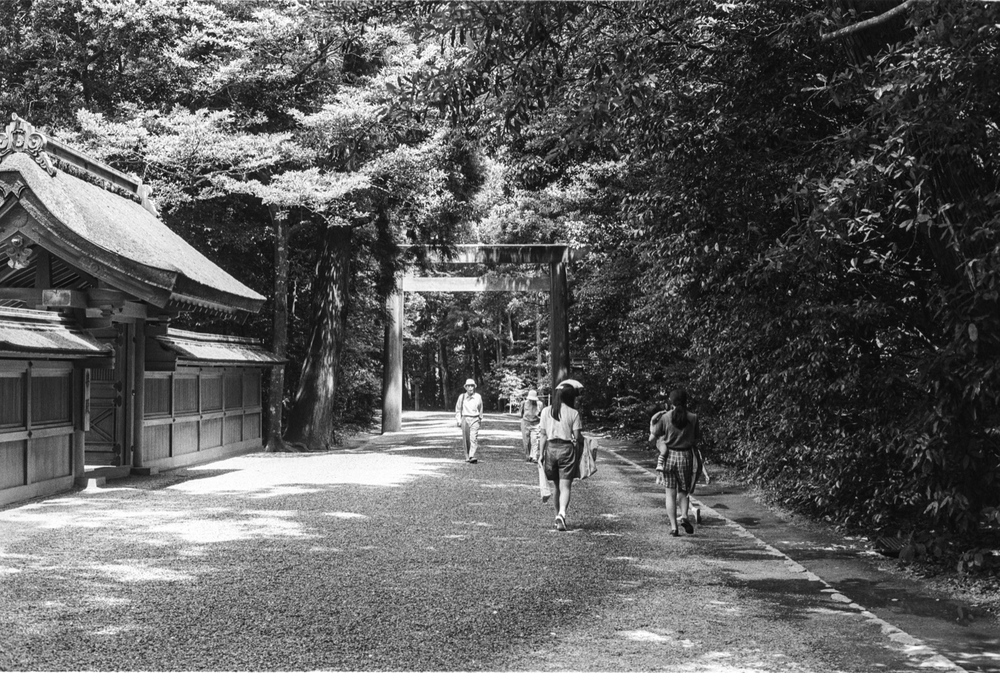
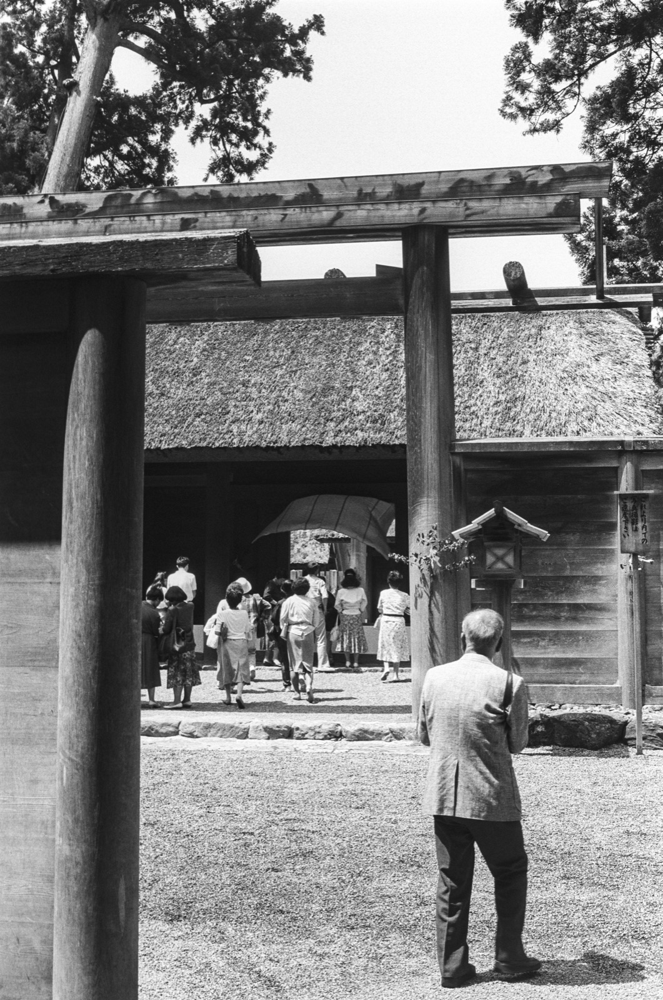
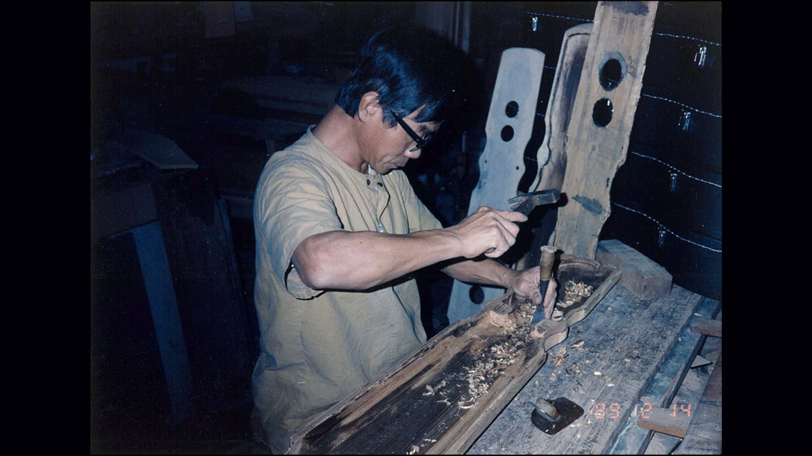

千歲文化的二十年傳承週期
千歲文化的二十年傳承週期關嘉匯蔡昌壽斲琴學會副會長香港柳生会總幹事（原文刊載於《文武之道（下冊）》• 盧敬之等編 • 超媒體出版 ）在《蔡昌壽師傅送給廿二世紀斲琴人的六十課》電影引子裏，我提到古琴的造琴藝術，雅稱「斲琴」，其實是一項一千八百歲的當代藝術。有別於已成過去的古老文化，今日的斲琴於晉代定型後，一直流行至今日，維持了最少一千八百年的「當代」資格。琴，今俗稱「古琴」，是中國知識分子的音樂。「斲琴」是彈琴的人參與樂器創作的文化。有別於一般樂器製作，琴的形態是自由的，件件不同，並背負作者的簽名、命名、題字，是音樂家把美學修為伸延至樂器創作的藝術。在動盪不安的二十世紀，人類普遍疲於奔命，世界各地不少文化遺產面對失傳的威脅。正當國內琴學於七十年代全面停頓的艱難時期，香港這片福地幸得浙派琴家徐文鏡老師傳授，延續了當時全國最後一脈斲琴。到一九九三年，徐老師的唯一斲琴徒兒蔡昌壽開始收納琴人為徒，二十年間在香港牛頭角及石硤尾的擠迫小工場裏，培育出超過五十位親自斲作琴器的彈琴人，作品張張不同，各具特色。在無人察覺間，斲琴其實成為了香港最具代表性的當代藝術之一。


二十多年間，我們每週末不停打磨、上漆、又打磨，漸漸習以為常成為生活習慣。我深刻感受到自己磨鍊二十年後的一雙手，才剛剛開始觸及蔡師傅那種隨心所欲的技術水平。環看身邊的人在工餘學習音樂、書法、武術、陶藝，若能持之以恆，技藝亦會在大約二十年後變得輕鬆自如，隨心所欲。我自小研習日本劍術為體育項目，亦同樣於二十年後開始擺脫體力、意念的約束，感到隨心所欲的運作。似乎，二十年是人體學習高難道技藝的一座時間門檻。三十年前，我在康乃爾大學唸書。因開辦大學劍道部，遇上一位日本柳生劍術世家的高徒，並得他支持，成為尾張柳生家第一個在海外收納的劍術學生。我在大學的全部消遣時間，都浸淫在柳生劍術的研習。柳生家的劍術，家傳超過四百多年至今日。歷代師範的口傳描述，從拆解技術上的微小細節、跨越心理障礙的竅門，到「承」與「傳」的雙向學習系統，有非常詳盡的文字描述，嚴謹地保存給後代師範為鑒。當中，於江戶中期寫下的註釋更是用中文寫的，多年來為我指點迷津。學習、教授劍術的過程讓我深刻明白﹕傳授艱深難學的技藝，必須把自己的心得詳細記錄下來。學生未能體會的道理，只需把答案預先寫下，禁止學生偷看，直到二十年後學生自己成為師範，有了自己的經驗，預先寫下的答案必定能為他解開一些謎團，更極有可能為四百年後的師範排難解困。在二〇一三年，我構思把蔡昌壽師傅授徒的整個過程拍攝下來，再加以註釋，留給未來的斲琴師範借鑒。計劃獲得衛奕信勳爵文物信託的資助，並於二〇一八年完成拍攝。在斲琴學會多位同學的義務參與下，歷時三年的拍攝花絮被剪輯成紀錄電影《蔡昌壽師傅送給廿二世紀斲琴人的六十課》，向公眾介紹我們的傳承歷程。記得在拍攝項目的公眾發佈講座中，一位觀眾向我提問。「為甚麼不用機器，而用人手？」這位熱心觀眾的意思，是無法理解我們為何在今時今日，仍然以辛苦吃力的晉代古法製作樂器，而不乾脆北上尋找工廠，用五軸CNC與機械噴漆臂進行生產。「我們也有時用電動工具的，」我笑着回答。「但為甚麼把樂趣讓給機器享受？」斲琴是創作藝術，就如繪畫，樂趣在自己的雙手之中，不能與印刷品比較。我跟隨蔡師傅學習斲琴二十多年，接受過多次記者訪問。在在二〇一四年以前，即是在蔡師傅與斲琴學會獲國務院指定為國家級非遺保護單位以前，記者都喜歡以「夕陽工業」的角度進行採訪及描述，未曾有一位記者看穿我們要復興文化的真正動機。在二戰後的悲慘世界，世界各地急於重建，當代藝術發展由只有二百年歷史的美國主導，以破舊立新、直指人心為賣點。優質的二十世紀當代藝術，會引領我們譁然後深刻思量十五秒，從而換個角度看事物。於是，世界各地的藝術學生虔誠地跑到MOMA參拜被鋸成一片片的母牛軀體，穿上晚裝在音樂廳肅然聆聽長達四分三十三秒的無聲交響樂，譁然十五秒後，回家埋頭構思下一個可能讓世人譁然十五秒的概念。漸漸，「譁然十五秒」成為最保守、最理所當然的當代藝術規條，更成為生活常態。每條轉載、每條廣告，目的都是令你譁然十五秒。博物館內的當代藝術品，早已不比互聯網上的種種譁然更令人譁然，亦不再引起更深層的人性體驗。今日急速的科技發展，給予年青人十五秒的名成利就機會。年輕人唯有埋頭製作各式各樣令人於十五秒內譁然的事物，才能在巨大企業支配的市場中找到獨立生存的出路。新世代早已不再容許孩子享有一輩子的耐性，賭上一生人的時間，學習一些千錘百鍊的老技術，去抗衡速成即食的新商品、胡剪亂貼的網絡新文化、朝三暮四的生活新態度。在這麼的一個時代，難怪城市人普遍無法理解延續艱深難學的古老文化的必要性。傳承千年的古老文化，是今日大行其道的十五秒文化的徹底相反。世上能傳承千年的人類深度文明有一個共通點﹕它必定經歷過數十代師範，每人花盡人生的前一半時間虛心學習、鑽研，再窮盡人生餘下一半時間傾囊傳授給下一代，才達至它爐火純青的水平。當中，這些非遺的「傳」比「承」困難得多，更需要有社會的配合，更需要有可持續的法道。當世上各種千歲非遺再不能解決從業人的生計，非遺便無法完整地延續其原貌。為吸引學生，不少文化遺產唯有作出變化、簡化、速成化、商品化，讓年輕人學了十堂五課，便能一知半解地自拍十五秒放上互聯網。這是可悲的現實。但難道世上沒有比自由經濟更合適的方法，讓老文化繼續當代、繼續長青？一九九三年，是蔡昌壽師傅開始授徒的第一年。我當時在大學唸書，趁暑假，安排行程由美國飛往日本拜候我的劍術老師柳生延春先生，順道跟隨兩位大學教授遊學日本，探索日本古建築，最後回港探親。一九九三 年是觀摩日本古建築的大好年頭。在京都，木匠正為一千二百歲的東寺進行大規模修葺﹔在三重，二千多位匠人亦正忙着，為伊勢神宮籌備一千三百年來的第六十一次「式年遷宮」。一九九三 年，日本關西的夏天非常炎熱。當日拜訪京都東寺，工匠帶我們爬上高高搭建在大殿屋簷上的工作室，還未爬到梯頂已全身濕透。我把頭顱探進工作室內，眼前是數以百計的古老工具，整齊地覆蓋着工作室的一整幅木板牆。在互聯網未普及的世界，這些奇形怪狀的鋸、鑿、刨，都是我前所未見的，跟大學木工場的電動工具大不同。我爬進工作室內，回個頭，面前就是數位工匠，正在巨型的斗拱上安裝新的月樑。「主樑在負重前是造曲的，」教授告訴我們，「但承托屋頂的重量後，主樑會變成完美直線，遇上地震更能橫向卸力，是非常高超的結構科學。」「這些技法已沿用千年，」一位較年輕的工匠用英語向我們介紹，「於平安時代從中國傳入的。」唐代至今，日本的古建築經歷過多次的戰亂、地震、火災，也經歷過人民非常貧窮的日子。但這些在中國已寥寥可數的大型木構建築，為何仍能在災禍頻繁的日本，一座又一座屹立着？我在東寺的屋簷上，忽然明白了。「這是活生生的當代建築，」我向教授說。

一九九三年東寺•修葺中的屋頂（關嘉匯攝）日本的匠人在二十世紀吸納了西方的新技術、新文化，卻沒有拋棄故有的老文化。正當世人着迷於奇形怪狀的新建築，謙虛沉實的老工匠卻自得其樂地延續東方木構建築，與在旁的大自然完美結合。我們的康乃爾大學考察隊在京都、奈良一帶住了一個月後，乘搭火車到三重，參觀快將進行「式年遷宮」的伊勢神宮。伊勢神宮的神社羣組，相傳起源於一千五百至二千年前。當中，以供奉天照大御神的「內宮」及供奉豐受大御神的「外宮」為首，被譽為全日本最崇高的聖地。伊勢神宮的建築模式並非於唐代傳入的中國木構建築，而是日本本土的古建築。我心情興奮，非常期盼也能爬進匠人的工作室，細看神宮的修建。

一九九三年東寺•木匠的弧度尺（關嘉匯攝）

一九九三年伊勢神宮•外宮參道（關嘉匯攝）路上，兩位教授沒有說話，直到我們抵達神宮的參拜石路。「左邊圍牆後面，」教授指向左邊的圍牆，「是現在的正宮，快將拆掉。右邊圍牆的帳篷後面，是未來二十年的正宮，差不多建好了。」我們步近正宮圍牆。門口被繩索、布簾攔住。「風起的時候，」站在老遠的教授提起嗓子叫道，「布簾會被吹起，拚命望吧，就只有那個時候能望進裏面。」風起，布簾飄揚，我探頭望進去，見一片長方型的石地，後面再有一幅圍牆、一所門樓；我伸長脖子，還是看不見後面的正宮，布簾已垂下來。「正宮在第三層圍牆後面，」教授叫道。「外宮與內宮大致一樣，也不准內進的！」一位來自波多黎各的同學高聲驚呼。「我們搭了半天火車，就是來看這條布簾？！」「過往一千三百年，人們都是步行來的！」教授回答。「我們搭車，真欠誠意！」伊勢神宮跟世上所有古建築物都不同。第一，它既是古建築、也是當代建築。自一千三百年前，每隔二十年，伊勢神宮的六十五座木造建築物會被解體拆卸、再以全新的材料按照原貌重新建造一次。舊宮拆出來的樑柱、器物會被運往全國各地，用

一九九三年伊勢神宮外宮 • 正宮門前布簾隨風飄揚一刻（關嘉匯攝）於其他神社的興建、維修。第二，建築物的所在地址，都分為左右幅地，一幅是上一個二十年的，一幅是下一個二十年的，輪流交替。今年拆左建右，二十年後拆右建左。整個重建過程需時八年，稱為「式年遷宮」，當中包含植樹、耕作、捕魚、煮食、編織、採材、製物、運輸、建造。新一代的二千位頂級工匠，有二十年時間追上上一代二千位工匠的技藝，而上一代工匠亦有二十年時間，為新一代工匠提供參考、核實，直到二十年後，傳承週期大成。另一位女同學苦笑叫嚷，「教授忘了寫信申請入場嗎？！」「這是神的地方，」教授回答。「妳要入場幹甚麼？」原來，日本最崇高的聖地不是一棟甚麼遊客打卡熱點。伊勢神宮是二千個二十年傳承週期、二千個傳統活化、二千個標準覆核。每二十年一次，它的成果會被分享至全國各地，成為當地的榜樣、模範。伊勢神宮守護的，是人類對文化傳承的尊重、承擔、堅持。參與者以外的人，當然只准在外窺探，不得入場騷擾。人成長後，有大約四十年最活躍的時間，足夠以二十年實踐「承」，再以二十實踐「傳」，直至技藝達至爐火純青。深度文化就是這樣延續至下一代。人類經歷了悲慘的二十世紀，由戰亂、貧窮中走出來，忽然進入了今日的科技爆炸時代。為糊口，我們別無選擇地疲於奔命，不停追趕新科技，設計新產品，創作新服務，吸引新顧客，滿足新要求。幸運的產物在十五年後落伍﹔較多產品在十五個月內被淘汰﹔最多產物在十五秒內被人忘卻。為競爭，生產線越搬越遠，機械人取代人手。越先進的國家，人就越失去用雙手進行實體作業的機會。但人類經歷了百萬年的耕作漁獵，用兩手作業的樂趣卻是人性的重要部分。於是，今日城市人的工餘文化包羅萬有，正是為了滿足人性對親手植樹、耕作、捕魚、煮食、編織、採材、製物、運輸、建造的本能渴求，平衡枯燥乏味的幹活。技藝早已不再是為生產而存在，而是為人性而延續。在這個新世界，擁有深度文化的社會，才能讓近者悅，遠者來。失去文化，社會就失去自身的凝聚力、吸引力。現在，正是中國文化復興的大時機。我們把握好這個時機，就能把險於二十世紀失掉的古文化、老智慧活生生地延續，納入日常生活，成為當代文化。但把握不當，老文化自行以商業化的模式延續下去，為着取悅更多耐性有限的新學生，必然會出現簡化、商品化、速成化的趨勢，從而變質，最後喪失其深厚內涵，變成孩子與孩子之間的競技。單靠自由經濟，老文化今日再不能自行完成傳承週期﹔我們需要國家政策提供框架、目標、時間、地點，集合捐獻，融合力量，計劃長遠的文化傳承週期，才能把千歲文化原汁原味地延續千歲，分享給所有人。這就是伊勢神宮的智慧，值得我們中國人虛心學習。而伊勢神宮的經驗告訴我們，二十年就是文化傳承週期的基數。我自中學在北美居住，大半個童年很少機會用中文說話。只因小時讀過一本有關孔子的漫畫書，知道孔子是古琴高手，我自幼對琴着迷。終於，我在八十年代末買到一張由一所上海樂器工廠製作的仲尼式琴，品質非常欠佳，但至少有它陪伴我在北美生活，作為我僅餘的中國文化。在那個時代，全球彈琴的人非常少，我亦找不到居住在北美的導師，唯有拿那個琴，胡亂彈奏任何自己會哼的曲子。那就是青年的我。一九九三年夏天，我完成日本古建築考察之旅後回港探親。就在返回美國開學前的星期天，跑上中環三聯書局選購中文書。我在那裏巧遇蔡昌壽師傅唯一一次的個人琴作展覽，震撼難以言諭。我把蔡師傅的卡片保存在錢包內，直到一九九七年回流香港，第一時間拜蔡師傅為師，研習斲琴作為自己每個週末的消遣。我就這樣，展開了兩個二十年傳承週期；今日還在不斷尋找方法，把斲琴與劍術帶給我的無窮樂趣，延續給下世代。二〇二〇年九月

蔡昌壽師傅於一九八九年斲作數張《鳳勢式》琴。筆者於一九九七年成為其中一琴的主人。